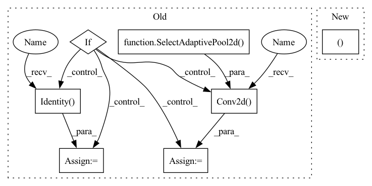

Pattern ID :31743
Before Change
def reset_classifier(self, num_classes, global_pool="avg"):
self.num_classes = num_classes
self.global_pool = SelectAdaptivePool2d(pool_type=global_pool)
if num_classes:
num_features = self.num_features * self.global_pool.feat_mult()
self.classifier = nn.Conv2d( num_features, num_classes, kernel_size=1, bias=True)
else:
self.classifier = nn .Identity()
def forward_features(self, x):
return self.features(x)
After Change
def reset_classifier(self, num_classes, global_pool="avg"):
self.num_classes = num_classes
self.global_pool, self.classifier = create_classifier(
self.num_features, self.num_classes, pool_type=global_pool, use_conv=True)
def forward_features(self, x):In pattern: SUPERPATTERN
Frequency: 3
Non-data size: 7
Instances Fragment ID: 92698145
Project Name: feng-lab/pytorch-image-models
Commit Name: b1f1a54de92ef8629eb486f2b14035a8cb314766
Time: 2020-08-03
Author: rwightman@gmail.com
File Name: timm/models/dpn.py
M Class Name: DPN
N Class Name: DPN
M Method Name: reset_classifier(3)
N Method Name: reset_classifier(3)
M Parent Class: nn.Module
N Parent Class: nn.Module
M File Name: timm/models/dpn.py
N File Name: timm/models/dpn.py
M Start Line: 249
M End Line: 256
N Start Line: 247
N End Line: 249
Before Change
def reset_classifier(self, num_classes, global_pool="avg"):
self.num_classes = num_classes
self.global_pool = SelectAdaptivePool2d(pool_type=global_pool)
if num_classes:
num_features = self.num_features * self.global_pool.feat_mult()
self.fc = nn.Conv2d( num_features, num_classes, kernel_size=1, bias=True)
else:
self.fc = nn.Identity()
def forward_features(self, x):
x = self.base_layer(x)
x = self.level0(x)After Change
def reset_classifier(self, num_classes, global_pool="avg"):
self.num_classes = num_classes
self.global_pool, self.fc = create_classifier(
self.num_features, self.num_classes, pool_type=global_pool, use_conv=True)
def forward_features(self, x): Fragment ID: 92698141
Project Name: feng-lab/pytorch-image-models
Commit Name: b1f1a54de92ef8629eb486f2b14035a8cb314766
Time: 2020-08-03
Author: rwightman@gmail.com
File Name: timm/models/dla.py
M Class Name: DLA
N Class Name: DLA
M Method Name: reset_classifier(3)
N Method Name: reset_classifier(3)
M Parent Class: nn.Module
N Parent Class: nn.Module
M File Name: timm/models/dla.py
N File Name: timm/models/dla.py
M Start Line: 316
M End Line: 323
N Start Line: 314
N End Line: 316
Before Change
assert num_classes == 0 or use_conv,\
"Pooling can only be disabled if classifier is also removed or conv classifier is used"
flatten = False // disable flattening if pooling is pass-through (no pooling)
global_pool = SelectAdaptivePool2d(pool_type=pool_type, flatten=flatten)
num_pooled_features = num_features * global_pool.feat_mult()
if num_classes <= 0:
fc = nn.Identity() // pass-through (no classifier)
elif use_conv:
fc = nn.Conv2d( num_pooled_features, num_classes, 1, bias=True)
else:
// NOTE: using my Linear wrapper that fixes AMP + torchscript casting issue
fc = Linear(num_pooled_features, num_classes, bias=True)
return global_pool, fcAfter Change
def create_classifier(num_features, num_classes, pool_type="avg", use_conv=False):
global_pool, num_pooled_features = _create_pool(num_features, num_classes, pool_type, use_conv=use_conv)
fc = _create_fc(num_pooled_features, num_classes, use_conv=use_conv)
return global_pool, fc
Fragment ID: 92698138
Project Name: feng-lab/pytorch-image-models
Commit Name: 231d04e91adca07f94ac32df8b5bdb8492281b0c
Time: 2020-12-28
Author: rwightman@gmail.com
File Name: timm/models/layers/classifier.py
M Class Name: AnonimousClass
N Class Name: AnonimousClass
M Method Name: create_classifier(4)
N Method Name: create_classifier(4)
M Parent Class:
N Parent Class:
M File Name: timm/models/layers/classifier.py
N File Name: timm/models/layers/classifier.py
M Start Line: 13
M End Line: 27
N Start Line: 35
N End Line: 36